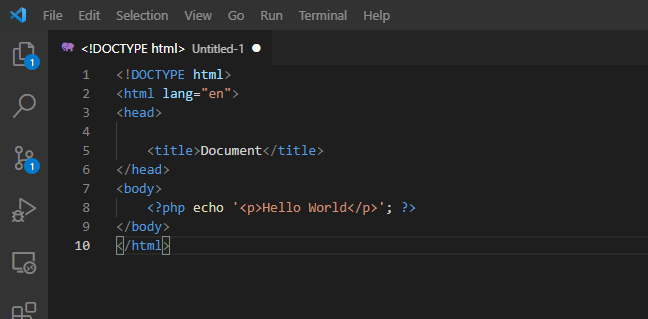

This tutorial will demonstrate how you can use Docker containers to run an Apache web server on your local computer.
STEP 1: Create a folder to store your dockerfile and web application files.
STEP 2: Create a file index.php in an src subfolder. The file will look as follows

STEP 3: Create a docker file, this will set up a container with apache. To do this, create a new file as shown below and save it as Dockerfile
STEP 4: Open a terminal in the same fgolder as your Dockerfile and run the following command to compile your Dockerfile:
docker build -t webserver .
webserver is the name we have chosen for our docker containerSTEP 5Run the image by using the command docker run -p 80:80 hello-world
STEP 6: Open a web browser and go to http://localhost to see your hellow world page
Mounting your folder: To mount a volume, use the command docker run -p -v /local-path/src/:/var/www/html/ webserver. This lets you make changes to your container by modifying the specified folder on your local computer